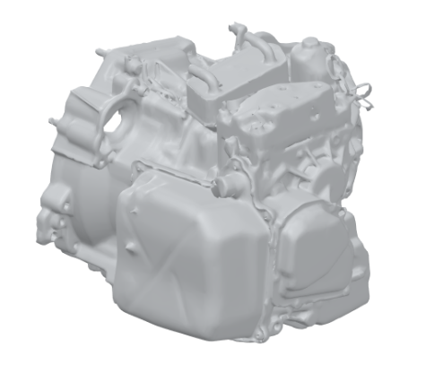
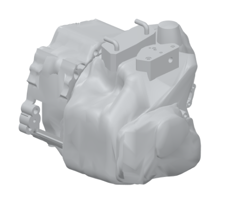
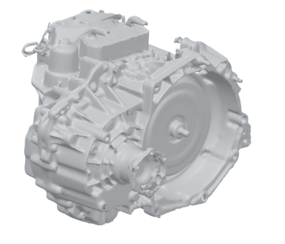
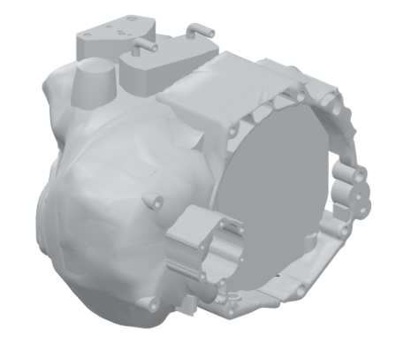

Jetta transmission
Wreck Racing / Scan-based CAD reconstruction / Autodesk Fusion 360
Project objective
Create a CAD representation of transmission geometry from a 3D scan for integration into a twin-engine Volkswagen Jetta.
My contribution
I used the scan as a reference to reconstruct transmission components in Fusion 360. The comparison shows the scan beside the completed simplified model.
The model simplifies surface detail while retaining the overall housing form and selected openings and protrusions visible in the scan.
Reference scan
Simplified CAD model



